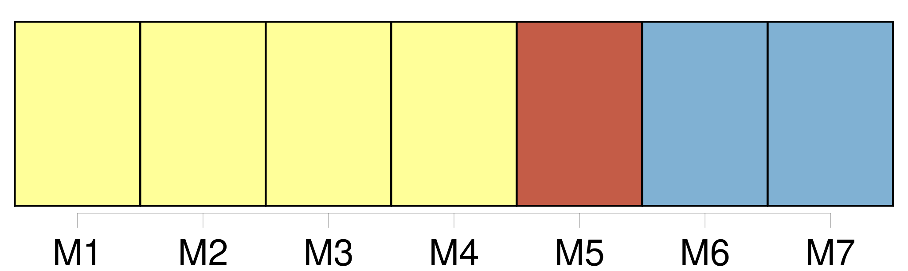

Longueur nb maillons : 15 mentions |
  |
Il fait tiède et fade dans [la chambre] [150 phrases] Il vint près d’ elle, lui effleura le front de sa barbe râpeuse ; il demanda si elle n’ avait besoin de rien, baissa la lumière de la lampe, et partit en heurtant les chaises, dans l’ obscurité de [la chambre] [83 phrases] – Et, du fond de [la chambre] , il semble, en les entendant, qu’ on voie passer les belles ondes sonores qui coulent dans l’ air léger, les libres oiseaux, et le tiède souffle du vent. [2 phrases] [Le petit monde familier aux regards de l’ enfant] , tout ce qu’ il aperçoit de son lit, chaque matin, en s’ éveillant, tout ce qu’ il commence, au prix de tant d’ efforts, à reconnaître et à nommer, afin de s’ en faire le maître, – [son royaume] s’ illumine. [1 phrases] Que de choses dans [cette chambre] !! [1 phrases] Chaque jour, il repart en exploration dans [cet univers] [qui] est à lui : – tout est à lui. [1 phrases] [La chambre] est un pays ; un jour est une vie. Comment se reconnaître au milieu de [ces espaces] ?? [Le monde] est si grand!! On s’ [y] perd. [72 phrases] Il est surpris et un peu contrarié que les autres n’ y fassent pas attention, en passant dans [la chambre] [228 phrases] Une délicieuse odeur de graisse et de chair croustillante embaume [la chambre] [7 phrases] Le bourdonnement des voix dans [la chambre] et des images de la journée se mêle dans son cerveau. |

|
La ressource peut être téléchargée sur la page Ortolang
Si vous avez des questions ou vous voyez des erreurs, merci d'envoyer un mail à silvia.federzoni89@gmail.com
Site développé par S. Federzoni (contact)